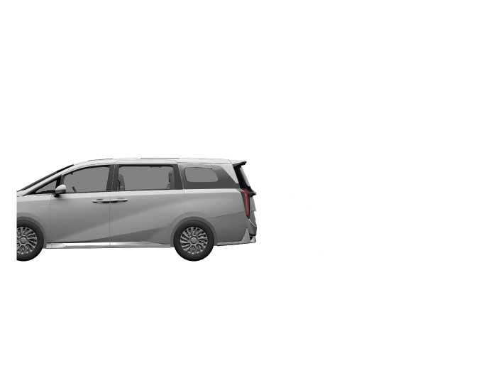

–当整车电源在“OFF”挡位且四门及后背门关闭时，用户携带智能遥控钥匙，走近后背门感应区域约0.5m范围时，喇叭响一声，同时高位刹车灯开始闪烁，如果保持原位置不动或后退一步，转向灯闪烁同时后背门自动开启，如果在高位刹车灯闪烁期间（闪烁4次）离开后背门区域，则不会开启后背门。
智能钥匙感应开启

提示+
– 后背门自动开启时，为提醒您注意，喇叭鸣叫1声，高位制动灯将闪烁4次，同时转向信号灯开始闪烁2次。
– 若在高位制动灯闪烁期间，离开后背门感应区域，可暂时停止该功能，后背门不会开启。
– 若在高位制动灯闪烁期间，短按智能遥控锁匙  按键，可暂时停止该功能，后背门不会开启。若想重新触发该功能，需要把任一车门打开再关闭后才能重新触发后背门感应开启功能。
按键，可暂时停止该功能，后背门不会开启。若想重新触发该功能，需要把任一车门打开再关闭后才能重新触发后背门感应开启功能。
– 可通过音响系统“设置→车身附件→门窗锁→后背门感应开启”设置为开启或关闭。
注意
+
– 当清洗车辆时，请确保智能遥控钥匙在后背门感应区域范围外，否则洗车员站在后背门感应区域，可能会导致后背门开启。洗车时，建议关闭该功能。
– 当携带智能遥控钥匙在后背门附近捡东西时，请注意可能会导致后背门开启。
– 使用自动感应开启后背门前，请确认无人或阻挡物处在后背门摆动范围内。
— 页面到底了 —